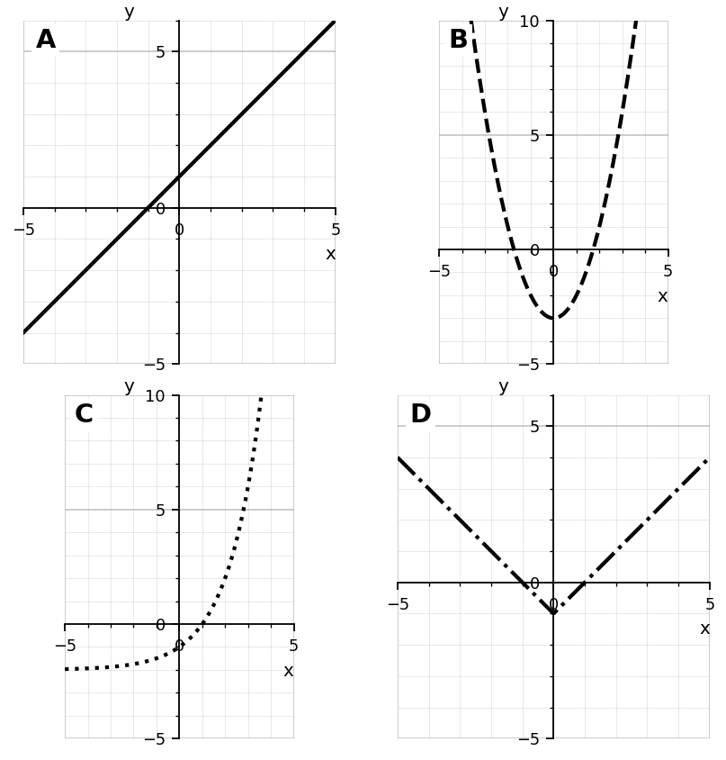
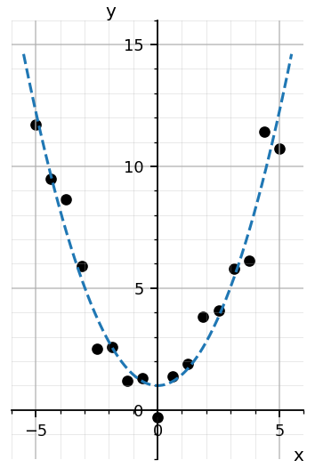
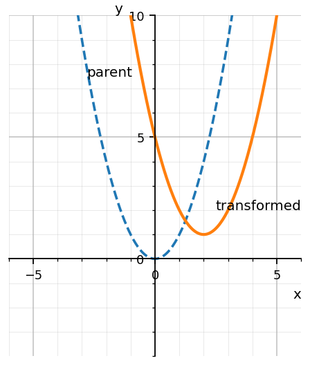
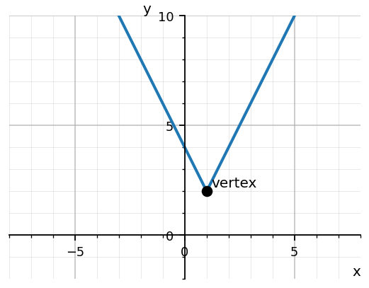
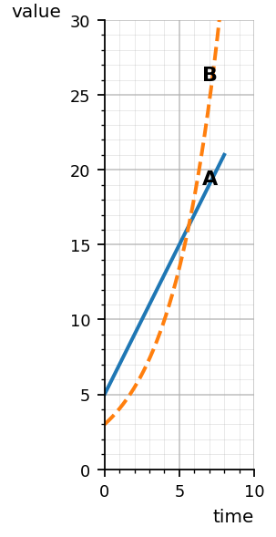
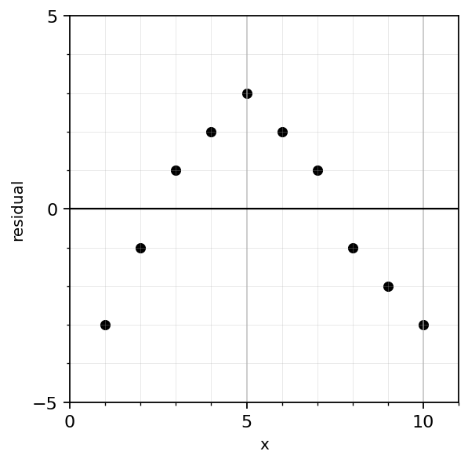
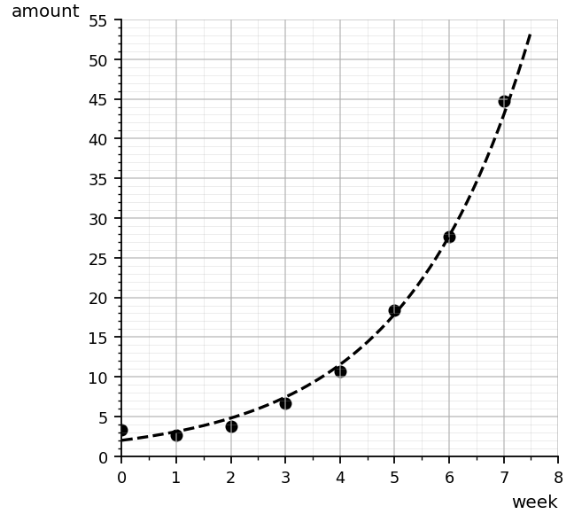
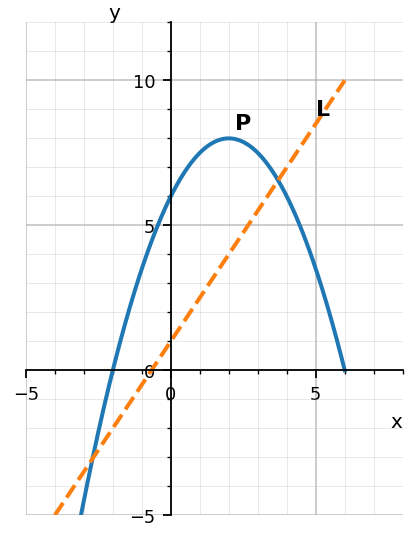

Students will analyze, compare, and model relationships using multiple function families in order to select appropriate models, interpret key features, and justify conclusions using equations, graphs, tables, and contexts.
| Rung | I Can Statement | DOK | Level |
|---|---|---|---|
| 8 | I can synthesize multiple function families and representations to choose, critique, and revise mathematical models for unfamiliar situations. | DOK 4 | Above |
| 7 | I can design and defend a multi-representation model, communicate its limitations, and revise my reasoning based on mathematical evidence. | DOK 4 | Above |
| 6 | I can justify why one function family or model is more appropriate than another using graphs, tables, equations, contexts, and residual patterns. | DOK 3 | Essential |
| 5 | I can analyze key features, transformations, and absolute value structure to explain how different representations communicate function behavior. | DOK 3 | Essential |
| 4 | I can use graphs, tables, equations, and contexts to compare linear, quadratic, exponential, and absolute value relationships. | DOK 2 | Essential |
| 3 | I can identify transformations, key features, model types, and input-output behavior from multiple representations. | DOK 2 | Essential |
| 2 | I can recognize vocabulary, notation, function-family shapes, key features, and basic model types. | DOK 1 | Essential |
| 1 | I can identify graphs, tables, equations, contexts, and parent-function families as representations of mathematical relationships. | DOK 1 | Essential |
Format: 3–5 minute warm-up, vocabulary check, representation recognition, model-type sort, or exit ticket
Purpose: Check whether students can recognize function families, transformations, absolute value features, model vocabulary, and basic representations.
Use the graph. Match each label to a function family: linear, quadratic, exponential, or absolute value.

Which equation represents an exponential function?
Identify the parent function for the equation $g(x)=|x|+4$.
Which expression represents a vertical translation of $f(x)$ upward by 6 units?
For $h(x)=2|x-1|+3$, identify the vertex.
Complete the sentence: A residual is the difference between the actual value and the __________ value.
Which table most clearly suggests exponential growth?
State one key feature of an absolute value graph.
Format: Mini-quiz, graph/table task, matching task, partner check, or short written task
Purpose: Check whether students can compare function families, identify transformations, work with absolute value functions, and connect data to model types.
Use the scatterplot. Which model type appears most appropriate: linear, quadratic, exponential, or absolute value? Explain briefly.

The parent function $f(x)=x^2$ is transformed to $g(x)=(x-2)^2+1$. Describe the transformation.

Use the graph of $y=2|x-1|+2$. Identify the vertex and describe whether the graph is narrower or wider than $y=|x|$.

Compare the growth shown in the table.
| $x$ | 0 | 1 | 2 | 3 | 4 |
|---|---|---|---|---|---|
| $A$ | 4 | 7 | 10 | 13 | 16 |
| $B$ | 2 | 4 | 8 | 16 | 32 |
Which relationship has a constant rate of change? Which has a constant multiplier?
Write an equation for an absolute value function with vertex $(3,-2)$ and the same width as $y=|x|$.
A phone value decreases by about $18\%$ each year. Which model type is most appropriate, and why?
For the function $q(x)=-(x+1)^2+5$, identify the reflection, horizontal shift, and vertical shift.
Use the graph. Which function eventually grows faster, A or B? Explain how the graph shows this.

Format: Constructed response, model critique, strategy comparison, representation analysis, or discourse prompt
Purpose: Check whether students can justify model choices, analyze transformations, interpret absolute value structure, and critique conclusions using evidence.
A student claims the data below should be modeled with a linear function because it is increasing.
| $x$ | 0 | 1 | 2 | 3 | 4 |
|---|---|---|---|---|---|
| $y$ | 2 | 4 | 8 | 16 | 32 |
Critique the claim and choose a better model type.
Use the residual plot. Explain why the residual pattern suggests the chosen model may not be appropriate.

Compare $f(x)=|x-4|$ and $g(x)=(x-4)^2$. How are their graphs similar, and how are they different?
A student says:
Every transformation works the same way for every function family.
Critique the statement using at least two different parent functions.
A temperature is considered acceptable if it is within 3 degrees of 72. Explain how absolute value can represent this situation, then write an inequality.
Use the scatterplot. Justify why an exponential model is more appropriate than a linear model.

Explain how the parameter $a$ affects each function: $y=a(x-h)^2+k$ and $y=a|x-h|+k$.
A model predicts that a business will keep growing exponentially forever. Explain one reason this conclusion might be unreasonable in context.
Format: Brief performance task, modeling task, critique-and-revise task, design task, or capstone synthesis task
Purpose: Check whether students can synthesize Algebra 1 function knowledge to model unfamiliar situations, compare families, communicate limitations, and justify decisions.
Create a data set that would be better modeled by a quadratic function than by a linear function. Include a table and explain the evidence.
Design two transformed functions from different families that share the same vertex or turning point. Write the equations and compare their graphs.
Create a tolerance situation that can be modeled with an absolute value inequality. Define the target value, tolerance, inequality, and solution meaning.
Use the graph comparing a projectile model and a linear model. Explain when each model might be useful and when it might be misleading.

Design a model-selection challenge using a real-world context. Include enough information so another student could decide between linear, quadratic, exponential, and absolute value models.
Critique this conclusion:
The model has a good prediction for one data point, so it must be the best model for the entire situation.
Revise the conclusion using stronger mathematical reasoning.
Create two different functions that have the same value at $x=0$ but different long-term behavior. Explain how their tables and graphs would show the difference.
Choose a situation from science, business, sports, or technology. Select a function family to model it, justify your choice, and state at least one limitation of your model.